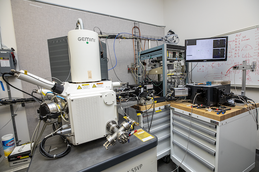
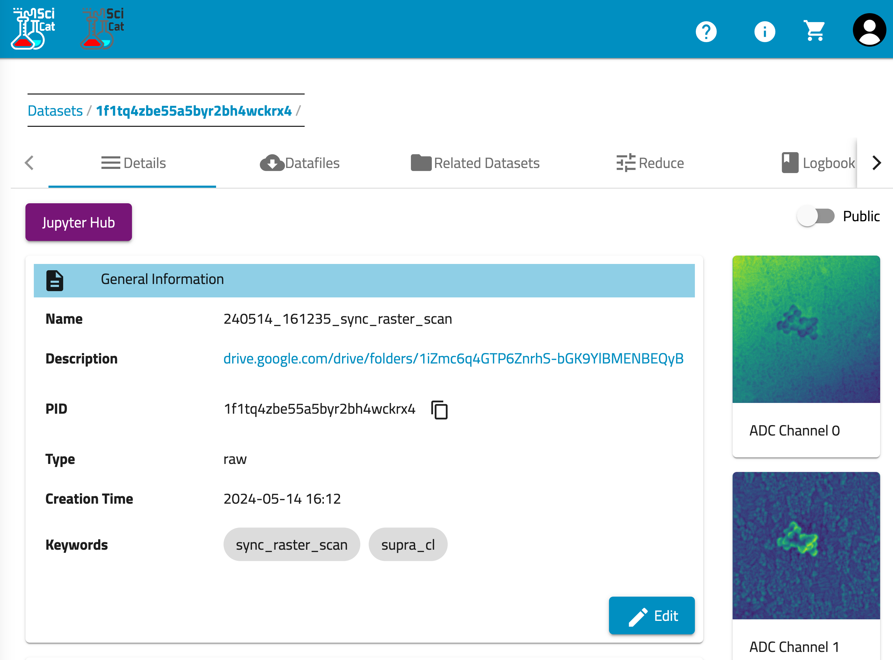

SupraCL
Instruments
Scientific Instruments at the Molecular Foundry connected to Crucible
Hardware

Zeiss Gemini Supra 55 VP Scanning Electron Microscope
This microscope is used for imaging and analysis of conducting and insulating samples. The SEM has multiple detectors including in-lens and conventional secondary electron detectors, in-lens and quadrant backscatter detectors, an EDS system for elemental x-ray analysis, and a transmission (STEM) bright/dark field detector compatible with standard TEM grids. Beam energy is variable between 100 eV and 30 kV, with 1 nm resolution above 2 kV and several nm resolution at 100 eV. A range of sample holders are available including standard SEM stubs, wafers to 4″, flat, tilted and cross section holders for wafer pieces, and for TEM grids.
Processing and Analysis
Sync Raster Scans in Crucible
